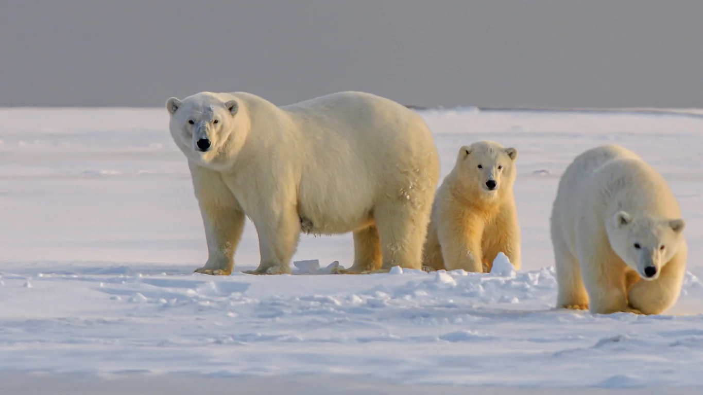

Netflix'in doğa serisi, dünyanın farklı habitatlarını ve bu bölgelerde yaşayan canlıları David Attenborough'nun anlatımıyla izliyor. Görsel anlatımın yanında iklim değişikliği ve insan faaliyetlerinin ekosistemlere etkisine de dikkat çekiyor.
Doğa & Çevre belgesellerine dön
Fragman kaynağı: Netflix — YouTube